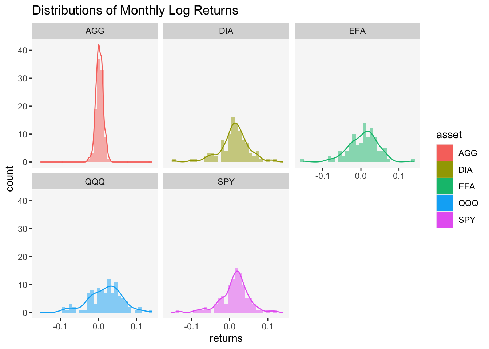

Estimating Probabilities of Asset Returns in R
 Photo by Ray_Shrewsberry on Pixabay
Photo by Ray_Shrewsberry on Pixabay
In a previous post, we covered some techniques for visualizing financial data— specifically, asset returns— using various types of visualization and R graphics libraries. We explored line charts, histograms, and density plots, which are all very useful ways to visualize asset returns. Nevertheless, we were left with a question— how could one estimate the probabilities of these asset returns? We are interested in this question since stakeholders may need more information than what visualizations could provide. Simply put, stakeholders may need us to provide some ways to ascertain uncertainty, as difficult as this may seem, and we must answer the call.
The problem
The last time we examined financial data, we focused on a class of assets called the Exchange Traded Funds. We took a sample of daily prices from 2012-12-31 to 2021-7-31 and converted them to monthly log returns. This ultimately left us with a sample of 103 monthly log returns. The last section of my post on asset visualization ended with this following visualization:

We also established that the heights of the curve (the y-axis) do not represent probabilities. To convert to an actual probability, we need to find the area under the curve for a specific interval of returns. One way of accomplishing this task is to fit some type of probability distribution to our data, and the options are plentiful. The difficulty, however, is that data from the world of finance are often messy and none of these options are ever consistently adequate. The problem, as David Harper once described in a blog post, is precisely this:
Finance, a social science, is not as clean as physical sciences. Gravity, for example, has an elegant formula that we can depend on, time and again. Financial asset returns, on the other hand, cannot be replicated so consistently. A staggering amount of money has been lost over the years by clever people who confused the accurate distributions (i.e., as if derived from physical sciences) with the messy, unreliable approximations that try to depict financial returns. In finance, probability distributions are little more than crude pictorial representations.
I quote David’s blog post here simply to emphasize that it is generally difficult to capture uncertainty accurately and consistently in finance. But this is not a reason to give up, and, in my humble opinion, we certainly should not disregard all the mathematical and statistical models in toto. Why? Perhaps, it is because having some information is usually more helpful than having no information. As the aphorism goes:
All models are wrong, but some are useful.
In light of this spirit, we will try to tackle the problem set forth in my last post to the best of our abilities.
Not theoretical, but empirical
A common practice is to use the normal distribution to approximate returns data, but empirical evidence often suggest sub-optimal goodness-of-fit due to skewness and excess kurtosis. Examine the skewness measures and excess kurtosis of our sample of returns data:
Skewness
# Skewness
asset_returns_tq %>%
# Apply the function from the PerformanceAnalytics package to each ETF
purrr::map_dbl(
.x = .,
.f = PerformanceAnalytics::skewness,
method = "moment"
) SPY EFA DIA QQQ AGG
-0.7011322 -0.5213137 -0.7557169 -0.2351347 -0.0665614 Excess Kurtosis
# Excess Kurtosis
asset_returns_tq %>%
# Apply the function from the PerformanceAnalytics package to each ETF
purrr::map_dbl(
.x = .,
.f = PerformanceAnalytics::kurtosis,
method = "excess"
) SPY EFA DIA QQQ AGG
2.1505474 2.1227652 2.3110488 0.3138191 0.3451339 In addition, take a look at the results for a test of normality:
| SPY | EFA | DIA | QQQ | AGG |
|---|---|---|---|---|
| 3e-04 | 0.0886 | 7e-04 | 0.129 | 0.6993 |
Controlling the Type I error rate at \(\alpha=0.1\), only the returns from the Invesco QQQ and iShares Core U.S. Aggregate Bond ETF’s could be considered normally distributed for this particular sample. All of the empirical evidence above suggest that, in practice, the normal distribution may not be a good fit for asset returns. Further, violation of the assumptions that the monthly returns are independently and identically distributed are frequent. Examine the shapes of the densities above, are there any good reasons to believe that these shapes are constant across time and that each random draw of monthly return will come from these exact distributions? Plus, we usually cannot argue a priori that monthly asset returns are independent.
Various other theoretical distributions such as the log-normal distribution, beta distribution, t-distribution have been used as alternatives. To the extent that these theoretical distributions work well with specific random samples of returns data, it may be helpful to employ them in our estimations of probabilities. Nevertheless, we may choose a normal or a log-normal distribution and discover later on that it misled us on the likelihood of left-tail losses. Sometimes we employ a skewed distribution that fits the sample very well only to have the data in the next period prove us wrong. Consider the returns series for the SPDR Dow Jones Industrial Average ETF. Let us plot the skewness-kurtosis graph:

summary statistics
------
min: -0.1464204 max: 0.1147059
median: 0.01368791
mean: 0.0113744
estimated sd: 0.0398583
estimated skewness: -0.7669313
estimated kurtosis: 5.487882 Examine the blue dot (labeled observation) in the plot above, does it look like our sample of returns is anywhere close to any of the theoretical distributions? The orange dots, which represent bootstrapped samples of the DIA returns series, are scattered all over the place; we simply cannot be certain if any of the theoretical distributions would be a good fit for our data. And we only have one sample in this case!
So for all of the reasons above, I opt to approach the task of estimating returns probabilities empirically. This approach entails the use of the empirical distribution function, commonly referred to as the eCDF. One advantage of this nonparametric approach is that we are depending on our data for estimation. Simply put, an empirical distribution is determined by the sample, whereas a theoretical distribution can only determine samples drawn from it. When the parametric conditions of validity are far from being met, we have to use the data itself to create a cumulative distribution in order to estimate probabilities.
The Empirical Cumulative Distribution Function
Before we discuss the R implementations, however, a bit of theory on the eCDF and its properties certainly would not hurt. Suppose that \(x_{1}, \ldots, x_{n}\) is a batch of observations (the word batch implies no commitment to an i.i.d stochastic model). The empirical cumulative distribution function is defined as
\[\begin{align*} F_{n}(x)=\frac{1}{n}\left(\text{number of} x_{i} \leq x\right) \end{align*}\]
Next, we order the batch of observations by \(x_{(1)} \leq x_{(2)} \leq \cdots \leq x_{(n)}\), so
if \(x<x_{(1)}\), the probability is defined as \(F_{n}(x)=0\)
if \(x_{(1)} \leq x<x_{(2)}\), the probability is defined as \(F_{n}(x)=\frac{1}{n}\)
if \(x_{(k)} \leq x<x_{(k+1)}\), the probability is defined as \(F_{n}(x)=\frac{k}{n}\)
If there is a single observation with value \(x\), then \(F_{n}\) has a jump of height \(\frac{1}{n}\) at \(x\); if there are \(t\) observations with the same value \(x\), then \(F_{n}\) has a jump of height \(\frac{t}{n}\) at \(x\). The eCDF is analogue to the cumulative distribution function of a random variable in a sense— \(F(x)\) gives the probability that \(X \leq x\) and \(F_{n}(x)\) gives the proportion of observations less than or equal to \(x\).
In the case where \(X_{1}, \ldots, X_{n}\) is a random sample from a continuous distribution function, \(F\), we can express \(F_{n}\) as follows: \[ F_{n}(x)=\frac{1}{n} \sum_{i=1}^{n} I_{(-\infty, x]}\left(X_{i}\right) \] where \[ I_{(-\infty, x]}\left(X_{i}\right)=\left\{\begin{array}{ll} 1, & \text { if } X_{i} \leq x \\ 0, & \text { if } X_{i}>x \end{array}\right. \] By the definition of CDF, the probability of \(X_{i}\leq x\) is \(F(x)\) and the probability of \(X_{i}>x\) is \(1-F(x)\). Note: \(F(x)\) is the true unknown cdf we intend to estimate. The random variables \(I_{(-\infty, x]}\left(X_{i}\right)\) are independent Bernoulli random variables: \[ I_{(-\infty, x]}\left(X_{i}\right)=\left\{\begin{array}{ll} 1, & \text { with probability } F(x) \\ 0, & \text { with probability } 1-F(x) \end{array}\right. \] Thus, \(n F_{n}(x)\) is a binomial random variable with \[ \begin{aligned} E\left[F_{n}(x)\right] &=F(x) \\ \operatorname{Var}\left[F_{n}(x)\right] &=\frac{1}{n} F(x)[1-F(x)] \end{aligned} \] In other words, \(F_{n}(x)\) is an unbiased estimator of \(F(x)\) and it has a maximum variance at the value of \(x\) such that \(F(x)=.5\), which is the empirical median. As \(x\) becomes very large or very small, the variance tends toward zero.
Estimating probabilities in R
The stats package provides a function factory, ecdf, that returns an empirical cumulative distribution function given a vector of observations. Let us create a manufactured function using the returns series of the SPDR Dow Jones Industrial Average ETF. As can be seen from earlier sections, the returns series for this ETF is far from normal, and, for that matter, from any other theoretical distributions.
# Create a function using the function factory
ecdf_DIA <- stats::ecdf(x = asset_returns_tq[["DIA"]])Next, we may plot the eCDF using ggplot2:
# Plot data
tibble::tibble(
x = asset_returns_tq[["DIA"]],
y = ecdf_DIA(v = asset_returns_tq[["DIA"]])
) %>%
# Plot using geom_step
ggplot(data = ., mapping = aes(x = x, y = y)) +
geom_step(color = "orange") +
labs(title = "Empirical Cumulative Distribution",
x = "Monthly Log Returns",
y = latex2exp::TeX(string = "$\\F_{n}(X)$")) +
theme(panel.grid = element_blank(),
panel.background = element_rect(fill = "white"))
The advantage of using a function factory is that we may now compute probabilities based on the eCDF. For instance, we may wish to know the probability that a monthly log return would fall below \(0\%\):
# Probability P(x < 0.0)
ecdf_DIA(v = 0)[1] 0.2815534In other words, there is about a \(28\%\) chance that a monthly log return would fall below \(0\%\). The probabilities that monthly log returns would fall within other intervals of values could be computed using the same method. Note: We could never estimate the probability that a monthly log return would take on a specific value. Because asset (or portfolio) returns are continuous, the probability that a monthly log return would take on any one specific value is zero.
Some words of caution
Viola! We now have a method, though an imperfect one, for estimating probabilities of asset returns. The empirical approach is not without its limitations. For instance, it is usually the case that a large amount of data is needed to accurately estimate a distribution nonparametrically, especially a continuous one. In this post, we employ of sample of 103 monthly returns from 2012 to 2021. For better accuracy, we could certainly switch to weekly or even daily frequency. The availability of historical data also ensures that we can expand our sample easily.
Still, some questions remain as we often need to make assumptions in order to interpolate between observed values of returns (What if we have yearly, weekly, or even daily frequencies?) and extrapolate outside the observed data range (What about the probabilities of returns intervals that are beyond the minimum and maximum values of our sample?). In addition, the reliability and convergence rate of the empirical approach in multivariate analyses decrease as data become more scattered in higher dimensions. Fortunately, in the context of asset returns, we often find ourselves in the case of univariate analysis.
In short, there is no perfect approach to estimating probabilities of asset returns. And, in reality, the focus is often placed on analyzing portfolio returns. To this end, there are are many alternative ways to quantify uncertainty outside of simple probabilities— value-at-risk, expected shortfalls, downside deviation, etc. In this post, we have demonstrated that perhaps no approach is ever completely correct but we must always try our best to do what we can to bring value. Fortunately, there is a variety of topics to cover in those avenues and we will certainly tackle them in future posts.